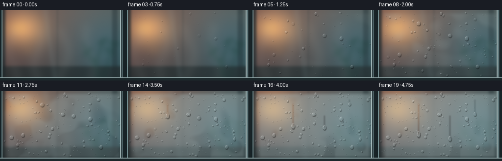
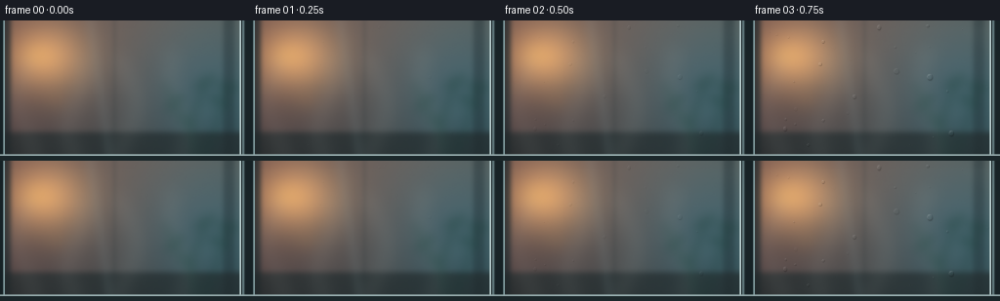

CODING AGENTS AS PIXEL WORLD MODELS
traex/GPT-5.6-Sol · phygen_101
点击播放 · 原生 RGB 像素
逐轮保存的候选
回放视频、检查图与代码变化。
每份候选均可单独播放。实际图片检查记录在下方工具轨迹中。
候选 01播放与检查图
点击播放 · 原生 RGB 像素


展开代码变化
--- 上一保存版本
+++ 本次保存版本
@@ -0,0 +1,241 @@
+from pathlib import Path
+import numpy as np
+import cv2
+from PIL import Image
+import artifact_io
+
+# Procedural condensation timelapse. Everything is generated deterministically from text.
+W, H, N = 256, 144, 20
+S = 3
+w, h = W*S, H*S
+rng = np.random.default_rng(101)
+
+def smooth(a, b, x):
+ q = np.clip((x-a)/(b-a), 0.0, 1.0)
+ return q*q*(3.0-2.0*q)
+
+def blur(a, sig):
+ return cv2.GaussianBlur(a, (0,0), sig, borderType=cv2.BORDER_REFLECT)
+
+def alpha_over(im, color, alpha):
+ return im*(1-alpha[...,None]) + np.asarray(color, np.float32)*alpha[...,None]
+
+# High resolution coordinates / static optical background.
+yy, xx = np.mgrid[0:h, 0:w].astype(np.float32)
+X, Y = xx/w, yy/h
+
+# Warm humid room seen through a cold, subtly blue pane.
+bg = np.zeros((h,w,3), np.float32)
+bg[...,0] = 57 + 41*(1-Y) + 27*(1-X)
+bg[...,1] = 69 + 25*(1-Y) + 13*X
+bg[...,2] = 69 + 18*(1-Y) + 16*X
+# warm diffuse pool from a distant lamp
+lamp = np.exp(-(((X-.18)/.245)**2 + ((Y-.26)/.36)**2)*2.0)
+bg += lamp[...,None]*np.array([111,72,27], np.float32)
+# cool dim region on right
+cool = np.exp(-(((X-.83)/.34)**2 + ((Y-.48)/.7)**2)*1.7)
+bg += cool[...,None]*np.array([-12,7,17], np.float32)
+
+# Defocused architecture and distant objects.
+scene = bg.copy()
+# blurred vertical window/room structures
+for x0, x1, col, a in [(.00,.045,(30,42,47),.72),(.45,.465,(33,48,51),.22),(.89,.94,(23,37,43),.35)]:
+ m = np.clip((X-x0)*200,0,1)*np.clip((x1-X)*200,0,1)
+ scene = alpha_over(scene, col, m*a)
+# vague countertop / sill beyond pane
+m = smooth(.77,.82,Y)
+scene = alpha_over(scene, (35,45,47), m*.72)
+# soft bokeh lights
+for cx,cy,r,col,a in [(.15,.25,.085,(255,196,104),.68),(.23,.57,.038,(240,164,85),.38),
+ (.68,.23,.026,(203,224,201),.25),(.82,.64,.055,(99,146,133),.24)]:
+ d=np.sqrt((X-cx)**2+(Y-cy)**2)
+ q=np.clip(1-d/r,0,1); q=blur(q, 8*S)
+ scene=alpha_over(scene,col,q*a)
+# out-of-focus plant at right: stems/leaves, then strongly blur
+plant=np.zeros((h,w),np.float32)
+for pts,thick in [([(.78,1.02),(.76,.73),(.83,.43)],4),([(.81,1),(.87,.72),(.91,.50)],3),([(.79,.88),(.70,.62),(.66,.45)],3)]:
+ p=np.array([(int(a*w),int(b*h)) for a,b in pts],np.int32)
+ cv2.polylines(plant,[p],False,1.0,thick*S,cv2.LINE_AA)
+for cx,cy,ang in [(.82,.44,-30),(.88,.58,22),(.70,.59,-40),(.91,.47,10),(.75,.72,35)]:
+ cv2.ellipse(plant,(int(cx*w),int(cy*h)),(12*S,4*S),ang,0,360,1.0,-1,cv2.LINE_AA)
+plant=blur(plant,5*S)
+scene=alpha_over(scene,(25,65,57),np.clip(plant*.46,0,.46))
+scene=blur(scene,2.3*S)
+
+# Fine glass texture and stationary reflections.
+noise=rng.normal(0,1,(h,w)).astype(np.float32)
+noise=blur(noise,.45*S)
+low=blur(rng.normal(0,1,(h,w)).astype(np.float32),18*S)
+low=(low-low.min())/(low.max()-low.min())
+scene += noise[...,None]*0.9 + (low[...,None]-.5)*2.2
+# angled cool reflection across glass
+reflection=np.exp(-((X-(.36+.08*Y))/.028)**2)
+scene=alpha_over(scene,(178,215,221),reflection*.055)
+scene=np.clip(scene,0,255)
+
+# Multiscale moisture nucleation field.
+n1=blur(rng.random((h,w)).astype(np.float32),11*S)
+n2=blur(rng.random((h,w)).astype(np.float32),30*S)
+n1=(n1-n1.min())/(n1.max()-n1.min())
+n2=(n2-n2.min())/(n2.max()-n2.min())
+moisture=.62*n1+.38*n2
+moisture=(moisture-moisture.min())/(moisture.max()-moisture.min())
+
+# Stable droplets. Larger beads appear earlier, many pinpricks later.
+drops=[]
+for i in range(235):
+ x=rng.uniform(.035,.955)*w
+ y=rng.uniform(.035,.93)*h
+ u=rng.random()
+ if u < .67: rf=rng.uniform(.42,1.18)*S
+ elif u < .94: rf=rng.uniform(1.2,2.45)*S
+ else: rf=rng.uniform(2.6,4.1)*S
+ birth=np.clip(rng.beta(1.35,2.0)*.92,0,.92)
+ # Large beads tend to be old condensation nuclei.
+ birth=max(0,birth-(rf/S-1)*.055)
+ drops.append((birth,x,y,rf,rng.uniform(.82,1.18),rng.uniform(0,6.28)))
+# Some very early recognizable droplets
+for vals in [(.0,.28,.31,2.3,1.0,.2),(.03,.58,.19,1.8,.95,1.1),(.08,.39,.66,2.7,1.1,2.2),
+ (.11,.73,.48,2.2,.9,1.4),(.0,.18,.74,1.4,1.0,0)]:
+ b,x,y,r,asp,ang=vals; drops.append((b,x*w,y*h,r*S,asp,ang))
+
+# Running drops create the most legible time-lapse event.
+runners=[
+ dict(x=.335*w,y=.19*h,b=.13,slide=.54,dist=.43*h,r=4.0*S),
+ dict(x=.585*w,y=.36*h,b=.05,slide=.68,dist=.32*h,r=3.7*S),
+ dict(x=.785*w,y=.13*h,b=.25,slide=.75,dist=.20*h,r=3.0*S),
+]
+
+def steam_layer(t):
+ """Soft moving water-vapor wisps, behind the glass."""
+ lay=np.zeros((h,w),np.float32)
+ # Wisps drift upward and curl; strongest early, before opaque condensation.
+ for k in range(4):
+ pts=[]
+ phase=1.7*k
+ for j in range(35):
+ v=j/34
+ cy=h*(1.18-v*.92-t*(.19+.025*k))
+ cx=w*(.10+.205*k + .035*np.sin(v*7.0+phase+t*4.0))
+ pts.append((int(cx),int(cy)))
+ cv2.polylines(lay,[np.array(pts,np.int32)],False,.7,2*S,cv2.LINE_AA)
+ return np.clip(blur(lay,9*S)*(.75-.28*t),0,.27)
+
+def composite_drop(im,cx,cy,rx,ry,alpha=1.0, angle=0.0):
+ """Draw a small optical water lens with refraction, rim, shadow and catchlight."""
+ if rx < .65: return
+ pad=int(max(rx,ry)*1.9+5*S)
+ x0=max(0,int(cx-pad)); x1=min(w,int(cx+pad+1)); y0=max(0,int(cy-pad)); y1=min(h,int(cy+pad+1))
+ if x1<=x0 or y1<=y0: return
+ gy,gx=np.mgrid[y0:y1,x0:x1].astype(np.float32)
+ ca,sa=np.cos(angle),np.sin(angle)
+ dx=gx-cx; dy=gy-cy
+ ux=(dx*ca+dy*sa)/max(rx,.01); uy=(-dx*sa+dy*ca)/max(ry,.01)
+ rr=np.sqrt(ux*ux+uy*uy)
+ mask=np.clip((1.06-rr)/.18,0,1)*alpha
+ mask*=smooth(0,1,mask)
+ # Outside lower-right contact shadow.
+ sr=np.sqrt(((gx-(cx+rx*.18))/max(rx*1.08,.1))**2+((gy-(cy+ry*.28))/max(ry*1.08,.1))**2)
+ shadow=np.clip((1.1-sr)/.16,0,1)*(rr>0.92)*.28*alpha
+ patch=im[y0:y1,x0:x1]
+ patch*=1-shadow[...,None]
+ # Lens interior: cool, clear, brighter at upper-left and darker opposite.
+ lens=np.clip(1-rr,0,1)
+ light=np.clip((-ux-uy)*13 + 6, -14, 18)
+ lenscol=patch + light[...,None]
+ lenscol=lenscol*(1-.08*mask[...,None])+np.array([174,207,210])* (.08*mask[...,None])
+ patch[:]=patch*(1-mask[...,None]*.74)+lenscol*(mask[...,None]*.74)
+ # bright upper-left rim and dark lower-right rim
+ hi=np.exp(-((rr-.88)/.11)**2)*np.clip((-ux-uy+.15)/1.5,0,1)*alpha
+ lo=np.exp(-((rr-.94)/.10)**2)*np.clip((ux+uy+.15)/1.6,0,1)*alpha
+ patch[:]=patch*(1-(hi*.42)[...,None])+255*(hi*.42)[...,None]
+ patch[:]*=(1-lo[...,None]*.25)
+ # tiny specular pinpoint
+ sp=np.exp(-(((ux+.34)/.17)**2+((uy+.38)/.14)**2)*2.3)*alpha
+ patch[:]=patch*(1-sp[...,None]*.62)+np.array([244,255,255])*sp[...,None]*.62
+
+frames=[]
+for fi in range(N):
+ t=fi/(N-1)
+ im=scene.copy()
+ # Visible humid air reaches the chilly pane.
+ st=steam_layer(t)
+ im=alpha_over(im,(220,228,220),st)
+
+ # Fog blooms patchily from microscopic nuclei, then spreads over the pane.
+ strength=.025 + .74*smooth(.04,.94,t)
+ threshold=.76-.63*smooth(.04,.92,t)
+ coverage=smooth(threshold-.10,threshold+.14,moisture)
+ # a faint condensation wave advances upward from the humid lower air
+ front=smooth(.83-.76*t, .93-.76*t, Y + .08*np.sin(X*7.5))
+ coverage=np.maximum(coverage,front*(.25+.52*t))
+ fog=np.clip(strength*(.34+.74*coverage),0,.82)
+ fog*=smooth(.01,.09,X)*smooth(.99,.92,X)*smooth(.01,.08,Y)*smooth(.99,.91,Y)
+
+ # Running beads wipe narrow transparent tracks through mist.
+ tracks=[]
+ for R in runners:
+ p=smooth(R['slide'],1.0,t)
+ ycur=R['y']+R['dist']*p
+ tracks.append((R,ycur,p))
+ if p>0:
+ tm=np.zeros((h,w),np.float32)
+ cv2.line(tm,(int(R['x']),int(R['y'])),(int(R['x']),int(ycur)),1.0,max(2,int(R['r']*.68)),cv2.LINE_AA)
+ tm=blur(tm,1.1*S)
+ fog*=1-np.clip(tm*.72,0,.72)
+
+ # Condensed microfilm blurs and cools the room behind the glass.
+ blurred=blur(im, 1.0*S + 3.4*S*smooth(.15,.95,t))
+ im=im*(1-(fog*.76)[...,None])+blurred*(fog*.76)[...,None]
+ mist_col=np.zeros_like(im); mist_col[:]=[177,198,199]
+ im=im*(1-(fog*.52)[...,None])+mist_col*(fog*.52)[...,None]
+ # wet glass has faint vertically streaked texture
+ streak=(blur(rng.normal(0,1,(h,w)).astype(np.float32),(.55*S,)) if False else 0)
+
+ # Stationary beads nucleate and slowly grow. Draw smallest first.
+ active=[]
+ for d in drops:
+ b,cx,cy,rf,asp,ang=d
+ q=smooth(b,min(1,b+.35),t)
+ if q<=.015: continue
+ r=rf*(.22+.78*np.sqrt(q))
+ active.append((r,b,cx,cy,asp,ang,q))
+ active.sort(key=lambda z:z[0])
+ for r,b,cx,cy,asp,ang,q in active:
+ # flattened small sessile drops, subtly elongating under gravity
+ ry=r*(1.0+max(0,r/S-2.0)*.055)*asp
+ rx=r/max(.92,asp*.97)
+ composite_drop(im,cx,cy,rx,ry,min(1,q*1.4),ang*.025)
+
+ # Large drops grow, become teardrop-shaped and descend late in the timelapse.
+ for R,ycur,p in tracks:
+ q=smooth(R['b'],R['b']+.28,t)
+ if q>.01:
+ rr=R['r']*(.34+.66*np.sqrt(q))
+ # small satellite just above suggests coalescence / necking
+ composite_drop(im,R['x'],ycur,rr*(1-.07*p),rr*(1.05+.48*p),q,0)
+ if p>.08:
+ composite_drop(im,R['x']-.12*S,ycur-rr*1.12,rr*.30,rr*.48,p*.72,0)
+
+ # Glass edge/frame and cold highlights establish the transparent surface plane.
+ # left thin rubber seal
+ cv2.rectangle(im,(0,0),(4*S,h),(24,37,41),-1)
+ cv2.line(im,(4*S,0),(4*S,h),(143,174,177),1*S,cv2.LINE_AA)
+ # metallic right jamb, with a narrow reflection
+ cv2.rectangle(im,(247*S,0),(w,h),(27,39,43),-1)
+ cv2.rectangle(im,(248*S,0),(250*S,h),(103,129,133),-1)
+ cv2.line(im,(246*S,0),(246*S,h),(202,225,225),1*S,cv2.LINE_AA)
+ # sill at bottom
+ cv2.rectangle(im,(0,138*S),(w,h),(30,43,46),-1)
+ cv2.line(im,(0,138*S),(w,138*S),(164,188,189),1*S,cv2.LINE_AA)
+ # subdued vignette
+ vig=np.clip(((X-.5)/.73)**2+((Y-.48)/.87)**2,0,1)
+ im*=1-.14*vig[...,None]
+ im=np.clip(im,0,255).astype(np.uint8)
+ out=cv2.resize(im,(W,H),interpolation=cv2.INTER_AREA)
+ frames.append(out)
+
+frames=np.stack(frames).astype(np.uint8)
+assert frames.shape==(20,144,256,3)
+artifact_io.save(frames, Path(__file__).resolve().parent)
+print('saved',frames.shape,frames.dtype)
可观测工具轨迹
实际执行的命令与返回图片。
命令 1exit 0
/bin/bash -lc "cat prompt.txt && printf '\\n---RULES---\\n' && cat GENERATION_RULES.md && printf '\\n---SPEC---\\n' && cat task_spec.json"
命令 2exit 1
/bin/bash -lc "find . -maxdepth 2 -type f -printf '%p\\n' | sort && printf '\\nTOOLS\\n' && command -v ffmpeg && command -v python3 && python3 - <<'PY' mods=['cv2','numpy','PIL','imageio','moviepy','cairo'] for m in mods: try: x=__import__(m); print(m,'OK',getattr(x,'__version__','')) except Exception as e: print(m,'NO',str(e)[:80]) PY"
命令 3exit 0
/bin/bash -lc "cat artifact_io.py; command -v ffmpeg || true; command -v python3 || true; python3 - <<'PY' mods=['cv2','numpy','PIL','imageio'] for m in mods: try: x=__import__(m); print(m,'OK',getattr(x,'__version__','')) except Exception as e: print(m,'NO',e) PY"
命令 4exit 0
/bin/bash -lc "cat > generate.py <<'PY'
from pathlib import Path
import numpy as np
import cv2
from PIL import Image
import artifact_io
# Procedural condensation timelapse. Everything is generated deterministically from text.
W, H, N = 256, 144, 20
S = 3
w, h = W*S, H*S
rng = np.random.default_rng(101)
def smooth(a, b, x):
q = np.clip((x-a)/(b-a), 0.0, 1.0)
return q*q*(3.0-2.0*q)
def blur(a, sig):
return cv2.GaussianBlur(a, (0,0), sig, borderType=cv2.BORDER_REFLECT)
def alpha_over(im, color, alpha):
return im*(1-alpha[...,None]) + np.asarray(color, np.float32)*alpha[...,None]
# High resolution coordinates / static optical background.
yy, xx = np.mgrid[0:h, 0:w].astype(np.float32)
X, Y = xx/w, yy/h
# Warm humid room seen through a cold, subtly blue pane.
bg = np.zeros((h,w,3), np.float32)
bg[...,0] = 57 + 41*(1-Y) + 27*(1-X)
bg[...,1] = 69 + 25*(1-Y) + 13*X
bg[...,2] = 69 + 18*(1-Y) + 16*X
# warm diffuse pool from a distant lamp
lamp = np.exp(-(((X-.18)/.245)**2 + ((Y-.26)/.36)**2)*2.0)
bg += lamp[...,None]*np.array([111,72,27], np.float32)
# cool dim region on right
cool = np.exp(-(((X-.83)/.34)**2 + ((Y-.48)/.7)**2)*1.7)
bg += cool[...,None]*np.array([-12,7,17], np.float32)
# Defocused architecture and distant objects.
scene = bg.copy()
# blurred vertical window/room structures
for x0, x1, col, a in [(.00,.045,(30,42,47),.72),(.45,.465,(33,48,51),.22),(.89,.94,(23,37,43),.35)]:
m = np.clip((X-x0)*200,0,1)*np.clip((x1-X)*200,0,1)
scene = alpha_over(scene, col, m*a)
# vague countertop / sill beyond pane
m = smooth(.77,.82,Y)
scene = alpha_over(scene, (35,45,47), m*.72)
# soft bokeh lights
for cx,cy,r,col,a in [(.15,.25,.085,(255,196,104),.68),(.23,.57,.038,(240,164,85),.38),
(.68,.23,.026,(203,224,201),.25),(.82,.64,.055,(99,146,133),.24)]:
d=np.sqrt((X-cx)**2+(Y-cy)**2)
q=np.clip(1-d/r,0,1); q=blur(q, 8*S)
scene=alpha_over(scene,col,q*a)
# out-of-focus plant at right: stems/leaves, then strongly blur
plant=np.zeros((h,w),np.float32)
for pts,thick in [([(.78,1.02),(.76,.73),(.83,.43)],4),([(.81,1),(.87,.72),(.91,.50)],3),([(.79,.88),(.70,.62),(.66,.45)],3)]:
p=np.array([(int(a*w),int(b*h)) for a,b in pts],np.int32)
cv2.polylines(plant,[p],False,1.0,thick*S,cv2.LINE_AA)
for cx,cy,ang in [(.82,.44,-30),(.88,.58,22),(.70,.59,-40),(.91,.47,10),(.75,.72,35)]:
cv2.ellipse(plant,(int(cx*w),int(cy*h)),(12*S,4*S),ang,0,360,1.0,-1,cv2.LINE_AA)
plant=blur(plant,5*S)
scene=alpha_over(scene,(25,65,57),np.clip(plant*.46,0,.46))
scene=blur(scene,2.3*S)
# Fine glass texture and stationary reflections.
noise=rng.normal(0,1,(h,w)).astype(np.float32)
noise=blur(noise,.45*S)
low=blur(rng.normal(0,1,(h,w)).astype(np.float32),18*S)
low=(low-low.min())/(low.max()-low.min())
scene += noise[...,None]*0.9 + (low[...,None]-.5)*2.2
# angled cool reflection across glass
reflection=np.exp(-((X-(.36+.08*Y))/.028)**2)
scene=alpha_over(scene,(178,215,221),reflection*.055)
scene=np.clip(scene,0,255)
# Multiscale moisture nucleation field.
n1=blur(rng.random((h,w)).astype(np.float32),11*S)
n2=blur(rng.random((h,w)).astype(np.float32),30*S)
n1=(n1-n1.min())/(n1.max()-n1.min())
n2=(n2-n2.min())/(n2.max()-n2.min())
moisture=.62*n1+.38*n2
moisture=(moisture-moisture.min())/(moisture.max()-moisture.min())
# Stable droplets. Larger beads appear earlier, many pinpricks later.
drops=[]
for i in range(235):
x=rng.uniform(.035,.955)*w
y=rng.uniform(.035,.93)*h
u=rng.random()
if u < .67: rf=rng.uniform(.42,1.18)*S
elif u < .94: rf=rng.uniform(1.2,2.45)*S
else: rf=rng.uniform(2.6,4.1)*S
birth=np.clip(rng.beta(1.35,2.0)*.92,0,.92)
# Large beads tend to be old condensation nuclei.
birth=max(0,birth-(rf/S-1)*.055)
drops.append((birth,x,y,rf,rng.uniform(.82,1.18),rng.uniform(0,6.28)))
# Some very early recognizable droplets
for vals in [(.0,.28,.31,2.3,1.0,.2),(.03,.58,.19,1.8,.95,1.1),(.08,.39,.66,2.7,1.1,2.2),
(.11,.73,.48,2.2,.9,1.4),(.0,.18,.74,1.4,1.0,0)]:
b,x,y,r,asp,ang=vals; drops.append((b,x*w,y*h,r*S,asp,ang))
# Running drops create the most legible time-lapse event.
runners=[
dict(x=.335*w,y=.19*h,b=.13,slide=.54,dist=.43*h,r=4.0*S),
dict(x=.585*w,y=.36*h,b=.05,slide=.68,dist=.32*h,r=3.7*S),
dict(x=.785*w,y=.13*h,b=.25,slide=.75,dist=.20*h,r=3.0*S),
]
def steam_layer(t):
\"\"\"Soft moving water-vapor wisps, behind the glass.\"\"\"
lay=np.zeros((h,w),np.float32)
# Wisps drift upward and curl; strongest early, before opaque condensation.
for k in range(4):
pts=[]
phase=1.7*k
for j in range(35):
v=j/34
cy=h*(1.18-v*.92-t*(.19+.025*k))
cx=w*(.10+.205*k + .035*np.sin(v*7.0+phase+t*4.0))
pts.append((int(cx),int(cy)))
cv2.polylines(lay,[np.array(pts,np.int32)],False,.7,2*S,cv2.LINE_AA)
return np.clip(blur(lay,9*S)*(.75-.28*t),0,.27)
def composite_drop(im,cx,cy,rx,ry,alpha=1.0, angle=0.0):
\"\"\"Draw a small optical water lens with refraction, rim, shadow and catchlight.\"\"\"
if rx < .65: return
pad=int(max(rx,ry)*1.9+5*S)
x0=max(0,int(cx-pad)); x1=min(w,int(cx+pad+1)); y0=max(0,int(cy-pad)); y1=min(h,int(cy+pad+1))
if x1<=x0 or y1<=y0: return
gy,gx=np.mgrid[y0:y1,x0:x1].astype(np.float32)
ca,sa=np.cos(angle),np.sin(angle)
dx=gx-cx; dy=gy-cy
ux=(dx*ca+dy*sa)/max(rx,.01); uy=(-dx*sa+dy*ca)/max(ry,.01)
rr=np.sqrt(ux*ux+uy*uy)
mask=np.clip((1.06-rr)/.18,0,1)*alpha
mask*=smooth(0,1,mask)
# Outside lower-right contact shadow.
sr=np.sqrt(((gx-(cx+rx*.18))/max(rx*1.08,.1))**2+((gy-(cy+ry*.28))/max(ry*1.08,.1))**2)
shadow=np.clip((1.1-sr)/.16,0,1)*(rr>0.92)*.28*alpha
patch=im[y0:y1,x0:x1]
patch*=1-shadow[...,None]
# Lens interior: cool, clear, brighter at upper-left and darker opposite.
lens=np.clip(1-rr,0,1)
light=np.clip((-ux-uy)*13 + 6, -14, 18)
lenscol=patch + light[...,None]
lenscol=lenscol*(1-.08*mask[...,None])+np.array([174,207,210])* (.08*mask[...,None])
patch[:]=patch*(1-mask[...,None]*.74)+lenscol*(mask[...,None]*.74)
# bright upper-left rim and dark lower-right rim
hi=np.exp(-((rr-.88)/.11)**2)*np.clip((-ux-uy+.15)/1.5,0,1)*alpha
lo=np.exp(-((rr-.94)/.10)**2)*np.clip((ux+uy+.15)/1.6,0,1)*alpha
patch[:]=patch*(1-(hi*.42)[...,None])+255*(hi*.42)[...,None]
patch[:]*=(1-lo[...,None]*.25)
# tiny specular pinpoint
sp=np.exp(-(((ux+.34)/.17)**2+((uy+.38)/.14)**2)*2.3)*alpha
patch[:]=patch*(1-sp[...,None]*.62)+np.array([244,255,255])*sp[...,None]*.62
frames=[]
for fi in range(N):
t=fi/(N-1)
im=scene.copy()
# Visible humid air reaches the chilly pane.
st=steam_layer(t)
im=alpha_over(im,(220,228,220),st)
# Fog blooms patchily from microscopic nuclei, then spreads over the pane.
strength=.025 + .74*smooth(.04,.94,t)
threshold=.76-.63*smooth(.04,.92,t)
coverage=smooth(threshold-.10,threshold+.14,moisture)
# a faint condensation wave advances upward from the humid lower air
front=smooth(.83-.76*t, .93-.76*t, Y + .08*np.sin(X*7.5))
coverage=np.maximum(coverage,front*(.25+.52*t))
fog=np.clip(strength*(.34+.74*coverage),0,.82)
fog*=smooth(.01,.09,X)*smooth(.99,.92,X)*smooth(.01,.08,Y)*smooth(.99,.91,Y)
# Running beads wipe narrow transparent tracks through mist.
tracks=[]
for R in runners:
p=smooth(R['slide'],1.0,t)
ycur=R['y']+R['dist']*p
tracks.append((R,ycur,p))
if p>0:
tm=np.zeros((h,w),np.float32)
cv2.line(tm,(int(R['x']),int(R['y'])),(int(R['x']),int(ycur)),1.0,max(2,int(R['r']*.68)),cv2.LINE_AA)
tm=blur(tm,1.1*S)
fog*=1-np.clip(tm*.72,0,.72)
# Condensed microfilm blurs and cools the room behind the glass.
blurred=blur(im, 1.0*S + 3.4*S*smooth(.15,.95,t))
im=im*(1-(fog*.76)[...,None])+blurred*(fog*.76)[...,None]
mist_col=np.zeros_like(im); mist_col[:]=[177,198,199]
im=im*(1-(fog*.52)[...,None])+mist_col*(fog*.52)[...,None]
# wet glass has faint vertically streaked texture
streak=(blur(rng.normal(0,1,(h,w)).astype(np.float32),(.55*S,)) if False else 0)
# Stationary beads nucleate and slowly grow. Draw smallest first.
active=[]
for d in drops:
b,cx,cy,rf,asp,ang=d
q=smooth(b,min(1,b+.35),t)
if q<=.015: continue
r=rf*(.22+.78*np.sqrt(q))
active.append((r,b,cx,cy,asp,ang,q))
active.sort(key=lambda z:z[0])
for r,b,cx,cy,asp,ang,q in active:
# flattened small sessile drops, subtly elongating under gravity
ry=r*(1.0+max(0,r/S-2.0)*.055)*asp
rx=r/max(.92,asp*.97)
composite_drop(im,cx,cy,rx,ry,min(1,q*1.4),ang*.025)
# Large drops grow, become teardrop-shaped and descend late in the timelapse.
for R,ycur,p in tracks:
q=smooth(R['b'],R['b']+.28,t)
if q>.01:
rr=R['r']*(.34+.66*np.sqrt(q))
# small satellite just above suggests coalescence / necking
composite_drop(im,R['x'],ycur,rr*(1-.07*p),rr*(1.05+.48*p),q,0)
if p>.08:
composite_drop(im,R['x']-.12*S,ycur-rr*1.12,rr*.30,rr*.48,p*.72,0)
# Glass edge/frame and cold highlights establish the transparent surface plane.
# left thin rubber seal
cv2.rectangle(im,(0,0),(4*S,h),(24,37,41),-1)
cv2.line(im,(4*S,0),(4*S,h),(143,174,177),1*S,cv2.LINE_AA)
# metallic right jamb, with a narrow reflection
cv2.rectangle(im,(247*S,0),(w,h),(27,39,43),-1)
cv2.rectangle(im,(248*S,0),(250*S,h),(103,129,133),-1)
cv2.line(im,(246*S,0),(246*S,h),(202,225,225),1*S,cv2.LINE_AA)
# sill at bottom
cv2.rectangle(im,(0,138*S),(w,h),(30,43,46),-1)
cv2.line(im,(0,138*S),(w,138*S),(164,188,189),1*S,cv2.LINE_AA)
# subdued vignette
vig=np.clip(((X-.5)/.73)**2+((Y-.48)/.87)**2,0,1)
im*=1-.14*vig[...,None]
im=np.clip(im,0,255).astype(np.uint8)
out=cv2.resize(im,(W,H),interpolation=cv2.INTER_AREA)
frames.append(out)
frames=np.stack(frames).astype(np.uint8)
assert frames.shape==(20,144,256,3)
artifact_io.save(frames, Path(__file__).resolve().parent)
print('saved',frames.shape,frames.dtype)
PY
python3 generate.py
ls -lh pixels.npz inspection.png index.html frames/00.png frames/19.png"命令 5exit 0
/bin/bash -lc "python3 - <<'PY'
import numpy as np
from PIL import Image
fs=np.stack([np.asarray(Image.open(f'frames/{i:02}.png')) for i in range(20)])
print('shape/dtype/range',fs.shape,fs.dtype,fs.min(),fs.max())
print('mean RGB first/mid/last',fs[[0,9,19]].mean((1,2)).round(1))
print('frame MAE:',np.abs(np.diff(fs.astype(float),axis=0)).mean((1,2,3)).round(2).tolist())
print('first-last MAE',np.abs(fs[-1].astype(float)-fs[0]).mean().round(2))
assert fs.shape==(20,144,256,3) and fs.dtype==np.uint8
assert np.all(np.abs(np.diff(fs.astype(float),axis=0)).mean((1,2,3))>0.1)
PY
# Ensure required deliverables are nonempty and generator remains runnable
test -s pixels.npz -a -s index.html -a -s inspection.png -a -s generate.py && echo 'deliverables OK'"保存候选 1 份；完成命令 5 次；可验证图片返回 0 张。原始 API 响应与完整日志保留在本地。